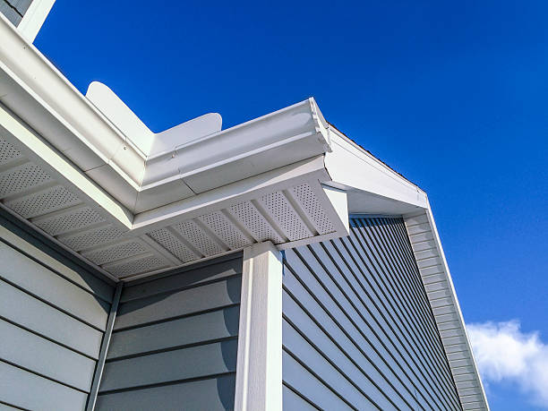
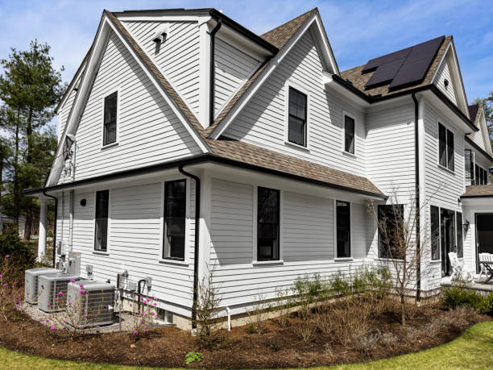
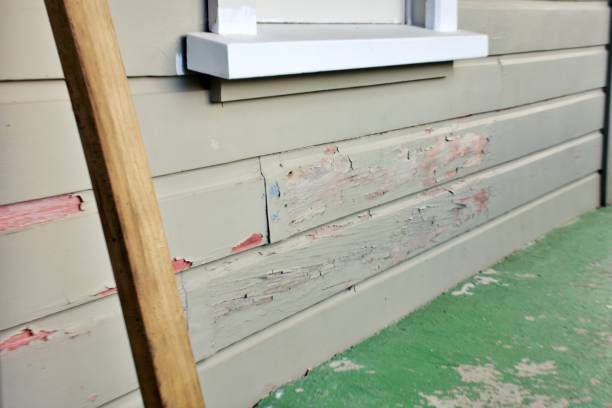

USA - Nationwide
info@bestroofingandsiding.pro
USA - Nationwide
info@bestroofingandsiding.pro

Enhance your home's exterior with premium residential siding installation . Our team delivers quality products and unbeatable service for your renovation project.
Boost your home's aesthetic appeal with our professional residential siding installation in Usa - Nationwide. Choose from a variety of styles, colors, and materials customized for your needs.
Residential & commercial siding
Quality services at affordable prices
Immediate 24/ 7 emergency services


When searching for reliable siding contractors near you our company stands out as the premier choice for all your siding needs. We understand the importance of finding local expertise that you can trust to transform your home’s exterior. Our team of experienced professionals is dedicated to delivering top-notch service and high-quality materials to ensure your home not only looks stunning but also remains protected against the elements.
We pride ourselves on our commitment to customer satisfaction, offering personalized consultations to help you choose the best siding options for your home. Our contractors are fully licensed and insured, giving you peace of mind knowing that your project is in capable hands. From vinyl and fiber cement to wood and aluminum siding, we have the expertise to handle it all.
By choosing us, you’re not just hiring a contractor; you’re partnering with a team that prioritizes quality, affordability, and customer service. Our reputation speaks for itself, and we invite you to experience the difference that our dedicated approach can make for your home.

Finding the best siding companies near you can be challenging, but your search ends here. Our company has established itself as a leader in the siding industry, recognized for excellence in both products and service. We offer a wide range of siding options that cater to every homeowner’s needs, ensuring that you receive the perfect match for your home style and budget.
With years of experience under our belt, we have honed our skills and knowledge to provide you with the highest quality siding installation and repair services. Our team consists of highly trained professionals who are passionate about what they do, using only the best materials to ensure longevity and performance.
Moreover, we offer competitive pricing and flexible financing options, making it easier for you to achieve the home exterior of your dreams. Our commitment to sustainability means that we also provide eco-friendly siding solutions that not only enhance your home’s appeal but also contribute to energy efficiency. When you choose us as your siding partner you're not just getting the best products; you're gaining a trusted ally in maintaining and enhancing your property's value.

Vinyl siding installation is an excellent choice for homeowners looking to enhance the beauty and durability of their homes. Our expert team specializes in providing high-quality vinyl siding that combines aesthetic appeal with unmatched durability. Vinyl siding is known for its ability to withstand harsh weather conditions while requiring minimal maintenance, making it a popular choice among homeowners.
At our company, we understand that every home is unique. That's why we offer a wide selection of colors, styles, and textures to ensure your vinyl siding perfectly complements your home’s architecture. Our installation process is thorough and precise, ensuring that the siding is applied correctly for a flawless finish.
Choosing our vinyl siding installation services means choosing reliability and expertise. We use only the best materials and practices in the industry, ensuring that your home is not only beautiful but also protected against the elements. Plus, our team is committed to delivering exceptional customer service and support throughout the entire process. Whether you're building a new home or renovating your existing one, our vinyl siding installation services are tailored to meet your needs.

Many homeowners believe that quality siding installation must come at a high price. However, our affordable siding installation services in Usa - Nationwide prove otherwise. We are committed to delivering high-quality siding solutions that fit within your budget without compromising on quality.
Our team understands the unique financial stresses that come with home renovations, which is why we offer flexible financing options to ensure accessibility for all. On top of that, we provide free estimates to help you understand the costs involved upfront. Our quality installations reduce the potential for future repairs and replacements, ultimately saving you money.
What sets us apart is our dedication to using superior materials at competitive prices, making us one of the most trusted names for affordable siding installation in Usa - Nationwide. Let us transform your home while keeping the budget intact!

Damage to your home’s siding can occur due to various factors, and timely siding repair services are vital. Our expert team offers comprehensive inspections to assess any damages ranging from severe weather wear and tear to pest infestations. We can restore your siding to its former glory with a swift, efficient approach.
We utilize high-quality repair materials and cutting-edge techniques to address issues such as cracks, holes, and faded sections. Understanding that siding repairs can often be urgent, our team prioritizes fast response times and effective repairs. We also advise on preventive maintenance measures that can extend the lifespan of your siding and save you from future repairs.

If you’re looking for reliable commercial siding contractors your search ends with our exceptional team. We understand that the exterior of your commercial property is just as important as its interior. A durable and appealing exterior can significantly impact your business's image, enhancing curb appeal and attracting customers.
Our team specializes in a variety of commercial siding solutions tailored to meet the unique needs of businesses. We work effectively with all types of materials, ensuring that your business is not only aesthetically pleasing but also protected against harsh weather conditions. We understand the time constraints commercial projects often face, which is why we prioritize efficiency without compromising quality.
Choose us for your commercial siding needs and you’ll benefit from our experience, reliability, and commitment to delivering exceptional results on time and within budget. Our satisfied clients testify to our ability to enhance their business's exterior through quality siding solutions.

Choosing local siding installers means you’re supporting your community and gaining access to trusted professionals who know the area well. Our team consists of highly skilled local installers who are dedicated to providing exceptional service tailored to the unique needs of your home and neighborhood.
We pride ourselves on our attention to detail and commitment to quality. Our local installers understand the local climate and its effects on siding materials, allowing them to give informed advice on the best options for your home. This local expertise, combined with our extensive product range, ensures that you receive the best siding solution for your specific needs.
By choosing our local siding installation services, you are ensuring personalized service with a focus on building lasting relationships with our clients. We are committed to delivering excellence in every project we undertake in Usa - Nationwide, making us the preferred choice for reliable siding services.

If your home's siding shows signs of wear, damage, or is simply outdated, our siding replacement services in Usa - Nationwide can breathe new life into your property. We specialize in replacing old siding with high-quality, modern materials that enhance your home’s appearance and efficiency.
Our experienced team will guide you through the selection of the best materials suited for your home’s architecture and your personal taste. Whether you prefer timeless wood, durable vinyl, or low-maintenance fiber cement, we have options to suit every need.
We understand that siding replacement can be a significant investment, which is why we provide detailed estimates and work with you to ensure the process is as smooth as possible. Trust us for your siding replacement needs and watch your home transform before your eyes!

Investing in siding is an important decision, and understanding the cost is essential. We provide detailed siding installation cost estimates that are clear and comprehensive. Our estimates include all necessary materials and labor, ensuring there are no hidden fees later.
Our team wants you to feel informed and confident when making decisions about your home's exterior. By offering transparent pricing, we help you understand where your investment is going and how you can achieve your desired look within your budget. Reach out today for a free estimate tailored to your project’s specific needs.

Your home is an expression of your personal style, and our custom home siding installation services allow you to make that vision a reality. Our experienced team will work closely with you to create a customized siding solution that aligns with your design preferences while adhering to your home’s architectural style.
From the initial consultation to the final installation, we prioritize your input, ensuring you are delighted with the results. We offer a variety of materials, colors, and finishes that allow for infinite customization, ensuring that your home stands out in the neighborhood.
Our commitment to quality ensures that every installation is secure, adding both beauty and value to your property. Discover the difference our custom siding installation can make; contact us today for more details!

In today’s eco-conscious world, energy-efficient siding options are not just a trend—they are a necessity. We offer a selection of energy-efficient siding in Usa - Nationwide that helps reduce energy costs while improving your home’s comfort.
Siding with high R-value insulation can significantly decrease your energy costs, keeping your home warm in the winter and cool in the summer. We work with leading manufacturers to bring you high-quality materials that are both stylish and energy-efficient. Partner with us to enhance your home's energy performance, and enjoy long-term savings.

Choosing the best siding materials for your home is essential to ensure durability, maintenance, and aesthetic appeal. Our company offers a wide selection of siding materials that meet both functionality and style requirements.
Our experienced team can guide you through the pros and cons of various siding materials, including vinyl, wood, fiber cement, and aluminum. We ensure you make an informed decision based on your home’s architecture, climate, and budget.
We take pride in sourcing high-quality materials that come with excellent warranties, giving you confidence in your investment. Let us help you choose the best siding materials for your home that provide lasting beauty and protection. Reach out to us today!

Building a new home is an exciting journey, and we’re here to help you every step of the way with our siding installation for new construction . Our experienced team collaborates closely with builders and homeowners to ensure the siding complements the architectural design.
Whether your vision calls for classic wood siding, durable vinyl, or modern fiber cement, we provide smooth and efficient installation services that align with the overall construction timeline. Our attention to detail and commitment to quality work ensures that the exterior of your new home is not only beautiful but also built to last.

Your home deserves the best, and our siding and window installation services in Usa - Nationwide ensure that you get just that. As a complete exterior solution provider, we can enhance both your siding and windows, providing a cohesive and polished look to your property.
Both siding and windows play pivotal roles in maintaining your home’s energy efficiency and aesthetic appeal. With our experienced team, you can trust that both installations will be done with precision. We use high-quality materials and innovative techniques to ensure your new siding and windows are functional, energy-efficient, and beautiful.

Fiber cement siding installation is a smart investment for homeowners seeking durability and beauty. Our company specializes in fiber cement siding, which is known for its resilience, low maintenance requirements, and ability to mimic the look of wood without the drawbacks.
Fiber cement siding is designed to withstand the harshest weather conditions, making it an ideal choice for homeowners looking for longevity and performance. Our professional team is experienced in handling fiber cement installations, ensuring a precise and seamless application that enhances your home’s exterior.
By choosing fiber cement siding from our company, you're investing in quality that protects your home while also boosting its curb appeal. Our commitment to customer satisfaction and attention to detail guarantees a smooth installation process giving you peace of mind in your siding choice.

If you need vinyl siding repair nearby, our team is adept at addressing various issues that may arise with vinyl siding, such as cracks, warping, or discoloration. Serving Usa - Nationwide, we provide prompt and professional vinyl siding repair services designed to restore your exterior while maintaining its appealing look.
Our experts can quickly assess the damage to determine whether repairs or replacements are necessary. We pride ourselves on utilizing authentic materials for repairs to ensure that any fixed sections harmonize seamlessly with the rest of your siding. Our goal is to extend the life of your vinyl siding efficiently while minimizing your repair-related stress.

Embrace the beauty and warmth of natural materials with our wood siding installation services in Usa - Nationwide. Wood siding adds timeless appeal to any home, offering a unique character that is hard to replicate with synthetic materials. Our experienced team specializes in installing various types of wood siding, ranging from classic clapboard to modern board and batten.
We are committed to quality and use only the finest materials, ensuring that your wood siding is both stunning and long-lasting. Our installation process is thorough, focusing on durability and protection from the elements.
Maintenance is crucial for wood siding, and we offer guidance on how to care for it to prolong its lifespan. Let us enhance your home’s exterior with our wood siding installation — contact us today to learn more!

Regular siding maintenance is crucial to preserving the beauty and functionality of your home in Usa - Nationwide. Our comprehensive siding maintenance services are designed to extend the life of your siding while ensuring your property remains in pristine condition. We recommend routine inspections and cleaning to catch potential issues early, minimizing repair costs down the line.
Our highly trained professionals perform cleaning, sealing, and repairs as needed, guiding you on maintaining your siding's integrity. We believe that proactive maintenance can save homeowners significant expenses and improve overall curb appeal. Trust us to keep your siding looking new while ensuring it performs exceptionally for years to come.

When searching for local siding companies, it’s essential to find one that understands your community’s needs and preferences. Our company takes pride in being one of the leading local siding companies in Usa - Nationwide, providing exceptional services tailored to our neighbors.
Our deep-rooted community ties enable us to provide personalized services that larger companies cannot match. We are committed to transparency and quality work, ensuring your siding project is completed on time and to your satisfaction. Choosing a local company means choosing expertise that is familiar with the unique requirements of homes in your area.

As more homeowners become environmentally conscious, the demand for eco-friendly siding installation has risen. Our company offers a range of sustainable siding options in Usa - Nationwide that not only look great but also minimize environmental impact.
We use eco-friendly materials that promote energy efficiency, reducing your carbon footprint while enhancing your home’s aesthetic appeal. Our team is knowledgeable about the latest sustainable practices and strives to incorporate them into every project we undertake.
Choosing eco-friendly siding means you're investing in the future of our planet while enjoying a beautiful home. Contact us today to learn more about our eco-friendly siding installation services!

Aluminum siding installation is an excellent choice for homeowners seeking a durable and low-maintenance option. Our company specializes in aluminum siding, known for its resistance to corrosion and ability to shield your home from the elements while providing a sleek, modern appearance.
Our experienced team will work closely with you to determine the ideal style and color of aluminum siding that matches your home’s architectural design. We emphasize quality workmanship and attention to detail to ensure that your siding is installed properly and looks stunning.
Choosing aluminum siding from our company means investing in a long-lasting solution for your home. With our focus on quality and customer satisfaction, you can trust that your aluminum siding installation will enhance your property in Usa - Nationwide for years to come.

When selecting siding contractors, choosing ones that offer warranties provides added peace of mind. Our reputed team of siding experts stands behind our work, offering comprehensive warranties on both the materials we use and our installation practices.
We believe in the quality of our workmanship and the enduring performance of the products we install. By offering warranties, we demonstrate our commitment to customer satisfaction and ensure you feel secure in your investment. Our transparent practices mean you know exactly what you can expect, making us the ideal choice among siding contractors in your area.

Comprehensive siding installation and repair services are essential for maintaining the beauty and integrity of your home. Our expert team specializes in providing both services in a seamless manner, ensuring that every aspect of your home’s exterior remains in top condition.
Whether you need new siding installed or existing siding repaired, we approach each project with an eye for detail and dedication to quality. Our understanding of various materials and styles allows us to deliver excellent results, regardless of your specific requirements. Choose us to manage your siding installation and repair, simplifying the process while ensuring your home's exterior is its best.

House siding installation services are crucial for achieving a beautiful and durable home exterior. Our company specializes in high-quality siding installation, providing a range of materials to suit every homeowner's style and budget.
We understand that the right siding can enhance your home's curb appeal while providing necessary protection from the elements. Our experienced team will guide you through your options, ensuring you make the best choice for your home.
When you choose our house siding installation services, you’re choosing quality, reliability, and a commitment to customer satisfaction. We take pride in providing top-notch service in Usa - Nationwide, ensuring your home looks its best while staying protected for years to come.
USA - Nationwide siding Pros
(877) 848-1711
info@bestroofingandsiding.pro
09.00 AM - 09.00 PM
09.00 AM - 12.00 PM